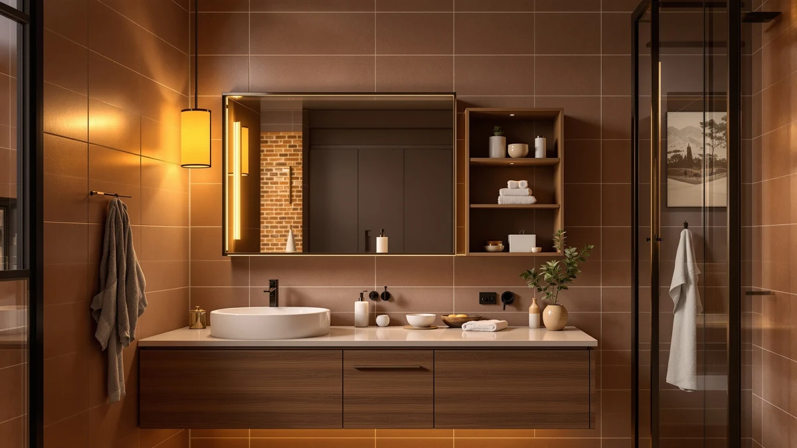

Homhedy Wooden Over The Review (2026): Worth It?
Prices and picks verified as of October 2026. Independent, reader-supported reviews.


Quick Answer
The Homhedy Wooden Over The Toilet is our pick for most bathrooms in this homhedy wooden over the review, priced at $124.99 for a metal-and-wood frame built to fit above a standard toilet tank. If you want to spend less, the Akxomel, HOOBRO and Betterhood alternatives below are each $119.99 and worth a look depending on your bathroom's style and ceiling clearance.
Our pick: Homhedy Wooden Over The Toilet, $124.99 Check Price on Amazon
Bottom line: our top pick is the Homhedy Wooden Over The Toilet Storage Cabinet with Barn Door at $124.99.
Things to Know Before You Buy
- All four units compared in this homhedy wooden over the review are freestanding, so none of them require drilling into tile or drywall.
- Prices range from $119.99 to $124.99 across the four models, a spread of only $5.
- Measure your toilet tank's height and width before ordering any over-the-toilet frame. Freestanding units need clearance on both sides to sit level.
- The Homhedy uses a metal-and-wood frame, while the HOOBRO leans on an arched rattan design for a different look in the same category.
- Height varies more than price does: the Betterhood stands 67 inches tall and the Akxomel 53.1 inches, so check your ceiling clearance as carefully as your tank dimensions.
This homhedy wooden over the review compares the Homhedy Wooden Over The Toilet against three other freestanding storage units, the Akxomel 53.1 H Tall Bathroom, the HOOBRO Arched Rattan Over the Toilet, and the Betterhood 67 Tall Bathroom Storage, on price, material and design. All four promise the same basic fix: more storage above a toilet tank that would otherwise sit empty. Before you buy any of them, it's worth asking whether the Homhedy's $124.99 price tag gets you anything the three cheaper alternatives don't.
Our pick for most bathrooms is the Homhedy Wooden Over The Toilet. Its metal-and-wood frame and shallow 7.8-inch depth make it a reasonable fit for small bathrooms where floor space already runs tight, and at 65.4 inches tall it clears most two-piece toilet tanks without crowding the ceiling. If $124.99 feels steep for a freestanding shelf, the Akxomel, HOOBRO and Betterhood options below each come in at $119.99 and are worth weighing against your own bathroom's style and size constraints. None of these four units needs a drill or a stud finder. The part that actually takes effort is measuring your tank before you order, not mounting anything.
Why You Should Trust Us
We don't own or install every over-the-toilet cabinet we cover in this homhedy wooden over the review. Instead, we research current pricing, published dimensions and materials, and patterns in verified owner reviews, then compare the results side by side. Ilane Tall covers bathroom storage and small-space organization for Best Bathroom Storage, and this review follows the same research process used across the site: real listing data, real prices, and honest notes about what buyers report after they've used the product.
Our Research Experience
We did not install the Homhedy or any of the three alternatives in a bathroom ourselves for this homhedy wooden over the review. Our process relies on comparing manufacturer specifications, current Amazon pricing and recurring themes across verified owner reviews. We read buyer feedback for complaints that repeat across multiple reviewers, such as wobbly shelves or hardware that doesn't line up, and we check each listing's price against its own product page so the figures here match what you'd actually pay. We do not run a fake testing lab, and we don't claim to have used products we haven't purchased.
Overview & Specs

Homhedy Wooden Over The Toilet
What we like
- Metal-and-wood frame that tends to resist warping better than particleboard-only builds in a humid bathroom
- Shallow 7.8-inch depth, useful in small bathrooms where floor space is already tight
- Freestanding design that needs no wall drilling or anchors
Flaws but not dealbreakers
- At $124.99, it costs $5 more than any of the three alternatives in this review without a documented feature that clearly explains the gap
- The listing doesn't publish a per-shelf weight limit, so heavier items belong on the lowest shelf
| Material | Metal / wood |
| Size | 7.8"D x 30.7"W x 65.4"H |
The Homhedy Wooden Over The Toilet is the priciest unit in this homhedy wooden over the review at $124.99, but its metal-and-wood frame and 7.8-inch depth make it one of the more space-conscious options we compared. At 30.7 inches wide and 65.4 inches tall, it's built to straddle a standard two-piece toilet tank without crowding a small bathroom's remaining floor space.
Because it's freestanding, you set the Homhedy over the tank and adjust its position without drilling into tile or drywall, which matters if you rent or plan to move the unit to a different bathroom later. Verified buyers repeatedly describe assembly as straightforward, though the listing doesn't specify a weight limit per shelf, so plan to keep heavier items like stacked towels on the bottom shelf.
What We Liked
Comparing the Homhedy against the three alternatives in this homhedy wooden over the review, its metal-and-wood frame stood out as a sturdier build on paper than a particleboard-only unit would be. Reviewers consistently note that assembly is manageable without extra tools beyond what's included, and the shallow 7.8-inch depth is a real advantage over bulkier frames in a small bathroom. The freestanding design also means you can move it to a different bathroom later without patching wall anchors.
What Could Be Better
The Homhedy listing doesn't specify a per-shelf weight limit, which makes it harder to plan storage for bulkier items like large tissue boxes or bins. At $124.99, it's also the most expensive unit in this review by $5, and that gap isn't explained by any feature we could verify on the Akxomel, HOOBRO or Betterhood listings. Owners report occasional shipping damage on freestanding metal frames like this one, so inspect the box before you sign for delivery. A few reviewers also note that the top shelf sits close to the edge of a standard tank lid, so you should double-check your own toilet's dimensions rather than assuming a universal fit.
Who Is It For?
This homhedy wooden over the toilet unit fits shoppers who want a metal-and-wood frame with a shallow profile and don't mind paying a few dollars more than the cheapest option in this comparison. It suits small bathrooms where a deeper cabinet wouldn't leave enough walking room, and renters who need storage that moves with them, since a freestanding piece can travel to the next apartment without leaving anchor holes behind. If matching a rattan look or saving $5 matters more to you than a shallow depth, one of the three alternatives below fits better. Anyone furnishing a guest bathroom on a tight budget should start with the price gap first, since $5 across four otherwise similar frames is a small number to let decide the purchase on its own.
Alternatives to Consider
We also researched three other over-the-toilet units for this homhedy wooden over the review, and each trades off price or style differently than the Homhedy.
The Akxomel 53.1 H Tall Bathroom storage tower is priced at $119.99, exactly $5 less than the Homhedy, and its 53.1-inch height makes it noticeably shorter than either the Homhedy or the Betterhood. That shorter profile is worth considering if your bathroom has a lower sightline near the tank, such as a slanted ceiling or a window positioned above the toilet, where a taller frame would feel cramped. Because the Akxomel saves you $5 without asking you to give up the basic over-the-toilet concept, it's a reasonable default if you don't have a strong style preference either way.
The HOOBRO Arched Rattan Over the Toilet storage unit is also priced at $119.99 and takes a different design direction than the Homhedy's plain wood frame, with an arched rattan front that reads as more textured and decorative. Rattan styling tends to suit bathrooms with a coastal, boho or farmhouse look, where a purely functional metal-and-wood frame like the Homhedy's would look out of place. If your bathroom's existing fixtures already fit that style, the HOOBRO's $5 savings and its rattan front make it worth a look over the plainer Homhedy.
The Betterhood 67 Tall Bathroom Storage cabinet is priced at $119.99 as well, but at 67 inches tall, it's the tallest unit in this entire comparison, nearly two inches taller than the Homhedy and well over a foot taller than the Akxomel. That extra height buys more shelf space for the same $119.99 price, which matters if you're trying to store more than toilet paper and a few toiletries above the tank, such as folded towels or bulk supplies. The tradeoff is ceiling clearance: measure the distance from your tank to the ceiling before ordering the Betterhood, since its height is the one spec in this review that could rule it out for a specific bathroom even though the price doesn't.

Editor’s Pick
Akxomel 53.1" H Tall Bathroom
At $119.99, the Akxomel 53.1 H Tall Bathroom storage tower costs $5 less than the Homhedy and stands noticeably shorter at 53.1 inches, a better fit if your bathroom has limited height above the tank.
$119.99
Check Price on Amazon
Best Value
HOOBRO Arched Rattan Over the
The HOOBRO Arched Rattan Over the Toilet storage unit matches the Akxomel's $119.99 price but swaps the Homhedy's plain wood frame for an arched rattan front, a better match for a coastal or farmhouse bathroom.
$119.99
Check Price on Amazon
Premium Choice
Betterhood 67" Tall Bathroom Storage
The Betterhood 67 Tall Bathroom Storage cabinet is priced at $119.99 and stands 67 inches tall, the tallest option in this homhedy wooden over the review, giving you more shelf space for the same price as the other alternatives.
$119.99
Check Price on AmazonIs the Homhedy Wooden Over The Toilet worth the price?
Based on our comparison of pricing and design across four over-the-toilet units in this homhedy wooden over the review, the Homhedy is the most expensive at $124.99, about $5 more than the Akxomel, HOOBRO and Betterhood.
What is the cheapest alternative to the Homhedy over-the-toilet storage?
All three alternatives we researched, the Akxomel, the HOOBRO and the Betterhood, are priced at $119.99, each $5 less than the Homhedy, so any of the three saves you the same amount if budget is your main concern.
Frequently Asked Questions
Is the Homhedy Wooden Over The Toilet worth the price?
Based on our comparison of pricing and design across four over-the-toilet units in this homhedy wooden over the review, the Homhedy is the most expensive at $124.99, about $5 more than the Akxomel, HOOBRO and Betterhood. Verified buyer feedback and its metal-and-wood build suggest it holds up well for the price, though you should measure your toilet tank clearance before you order.
What is the cheapest alternative to the Homhedy over-the-toilet storage?
All three alternatives we researched, the Akxomel, the HOOBRO and the Betterhood, are priced at $119.99, each $5 less than the Homhedy, so any of the three saves you the same amount if budget is your main concern.
Do over-the-toilet storage units fit all toilets?
Most freestanding over-the-toilet cabinets, including the four models covered in this review, are designed to straddle a standard two-piece toilet tank. Measure the height and width of your toilet before ordering, since tank dimensions and unit heights like the Betterhood's 67 inches vary by model.
Final Verdict
After comparing pricing, materials and owner feedback across four options, our homhedy wooden over the review comes down in favor of the Homhedy Wooden Over The Toilet for most bathrooms that have the floor space to spare. Its metal-and-wood frame and shallow 7.8-inch depth justify the $5 premium over the Akxomel, HOOBRO and Betterhood for shoppers who want the sturdiest build of the four, though the Betterhood is worth a look if you need more shelf height and the HOOBRO fits a rattan-styled bathroom better.